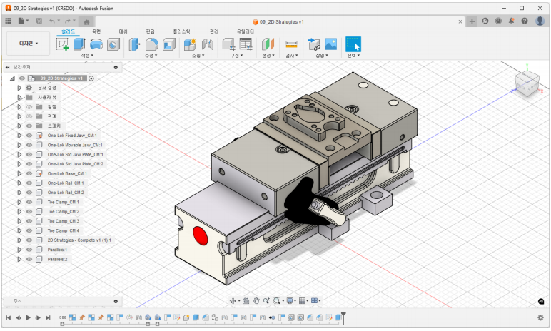
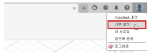
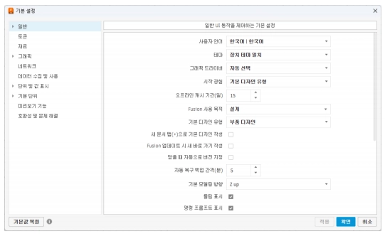
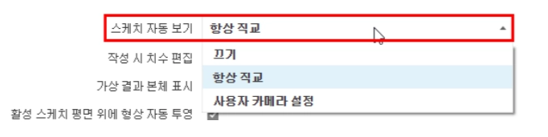
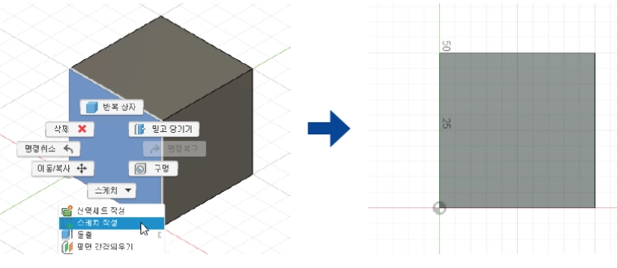
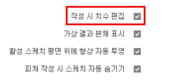
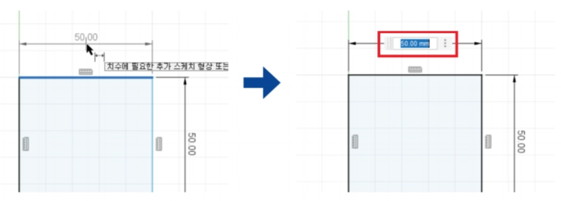

[15차시] FUSION_기본 개념
1. FUSION의 개요
1.1. FUSION의 특징
- Fusion은 전문가용 제품 설계 및 제조를 위한 클라우드 기반 3D 모델링, CAD, CAM, CAE, PCB
소프트웨어 플랫폼임.
- Autodesk Fusion은 전체 제품 개발 프로세스를 하나의 클라우드 기반
소프트웨어에 연결해 주는 최초의 3D CAD 도구임.
- 산업 디자이너, 기계 엔지니어, 전기 엔지니어,
기계 기술자, 취미로 사용하는 사람, 스타트업 등이 Autodesk Fusion을 사용함.


1.2. FUSION 시작하기
1.2.1. 작업 공간

- 목적 중심 작업 공간으로 그룹화
- ① 디자인 : 디자인 작업공간을 사용하면 2D 스케치 형상에 의해 구동되는 솔리드, 곡면 모형 형상을 작성하고 편집할 수 있음.
- ② 제너레이티브 디자인 : 위상 최적설계를 통해 다양한 하중, 조건, 목표에 맞는 디자인을 탐색하여
제조에 가장 적합한 디자인을 선택할 수 있음.
- ③ 렌더링 : 조명과 재질을 선택해 디자인의 사실적 이미지를 생성할 수 있음.
- ④ 애니메이션 : 설계 조립품에 대한 분해도를 작성하거나 분해, 조립 과정을 애니메이션으로 표현할 수
있음.
- ⑤ 시뮬레이션 : FEA(유한 요소 분석)를 사용하여 디자인을 테스트하기 위해 학습을 설정하고 다양한
하중 및 조건에서 디자인이 작동하는 방식을 시뮬레이션할 수 있음.
- ⑥ 제조 : 절삭 가공을 위한 툴 패스를 생성하거나 3D 프린팅 작업을 위한 gcode를 생성할 수 있음.
- ⑦ 도면 : 부품 및 조립품에 대한 도면을 작성하고 제조 사양을 문서화할 수 있음.
1.2.2. 인터페이스

- ① 데이터 패널 : 팀, 프로젝트 및 디자인에 액세스하고, 디자인 데이터를 관리하거나 다른 사용자와
공동 작업을 수행할 수 있음.
- ② 응용 프로그램 막대 : 파일 열기 및 저장, Fusion 익스텐션, 온라인/오프라인 및 업데이트 상태에 대한
아이콘이 모여있음.
- ③ 도구 막대 : Fusion의 명령어들이 모여있는 툴바임.
- ④ 브라우저 : 조립품의 객체를 나열하고 객체의 가시성을 제어할 수 있음.
- ⑤ 뷰 큐브 : 뷰 큐브의 면, 모서리, 점을 클릭하여 화면의 방향을 바꿀 수 있음.
- ⑥ 탐색 막대 : 화면 제어에 사용되는 명령어와 화면 표시, 그리드, 뷰포트를 설정할 수 있는 명령어들로
구성되어 있음.
- ⑦ 타임라인 : 수행된 작업 히스토리를 나열함. 아이콘을 마우스 우측 버튼으로 클릭하여 편집하거나
아이콘을 끌어 작업 순서를 변경할 수도 있음.
1.2.3. 화면 제어_마우스

1.2.4. 화면 제어_뷰 큐브(View Cube)
- 뷰 큐브(View Cube)란 화면 우측 상단에 위치한 상자 모양의 박스
- 각 면이나 모서리 및 꼭지점을 마우스로 클릭하여 화면을 제어할 수 있음.
- 상자의 각 표면에는 해당 방향에 대한 이름이 쓰여져 있음.

- ① 홈 뷰 : Fusion이 기본으로 삼고 있는 방향으로 화면을 전환함.
- ② 직교 뷰 : 정투상 방향으로 화면을 회전할 수 있음.
- ③ 회전 뷰 : 화면을 90도씩 회전할 수 있음.
1.2.5. 화면 옵션_설정
- Fusion의 옵션은 우측 상단 로그인 아이콘의 [기본 설정] 명령을 클릭하여 실행할 수
있음.




설정_일반_사용자 언어(한국어)


설정_일반_기본 모델링 방향
- 기본 모델링 방향을 Z up 또는 Y up으로 설정할 수 있음.

설정_일반_마우스 설정
- 초점 이동, 줌, 회전 등에 대한 화면 제어법을 Inventor, SolidWorks 등 다른 프로그램의 화면 제어 방식으로 설정할 수 있음.

설정_일반_줌 방향 반전
- 마우스 휠을 이용하여 ZOOM IN/OUT을 하는 방향을 반전시킬 수 있음.

1.2.6. 화면 옵션_설정_디자인
디자인_참조할 모서리 자동투영
- 방향이 활성 스케치 평면에 수직인 경우 활성 스케치에서 구속조건 및 치수를 작성하기 위한 참조로 사용할 모형 모서리를 자동으로 투영할 수 있음.


디자인_스케치 자동 보기
- 스케치 작성 및 편집시 스케치 평면을 자동으로 모니터와 평행하게 볼 수 있음.




디자인_작성시 치수 편집
- 치수 작성시 치수 편집 대화상자가 자동으로 열려 치수 기입과 동시에 치수 편집이 가능함.




- Fusion 문서의 기본 단위는 일반적으로는 mm를 선택하여 사용함.

2. FUSION 작업 시작하기
2.1. 새 디자인 작성하기
2.1.1. 새 디자인_파일 메뉴에서 작성하기
- 파일 메뉴의 [새로 만들기] 명령을 이용하여 새 디자인을 작성할 수 있음.

아이콘 클릭하여 작성하기
- 새 디자인 + 아이콘을 클릭하여 새 디자인을 작성할 수 있음.

2.1.2. 템플릿
- 새 작업을 시작하기 위해서는 부품, 조립품, 도면 등 작업자가 작업하려고 하는 템플릿을 선택해야 함.

2.1.3.파일 열기
[데이터 패널 표시] 아이콘으로 파일 열기
- [데이터 패널 표시] 아이콘을 클릭하여 데이터 패널을 실행한 후 열고 싶은 디자인이
있는 프로젝트 및 폴더 위치로 이동하여 해당 디자인을 두 번 클릭하면 파일을 열 수
있음.

내 컴퓨터에서 파일 열기
- 내 컴퓨터에서 디자인 열기
- Fusion 파일(.f3d), Inventor파일(.ipt, .iam), SolidWorks파일(.prt, .asm, .sldprt, .sldasm), IGES 파일(.iges, .ige, .igs), STL파일(.stl) 등 여러 종류의 파일을 열 수 있음.

2.1.4. 새 디자인 저장하기
- 파일 메뉴의 [저장] 명령을 이용하여 프로젝트에 디자인을 저장할 수 있음.

- 파일 메뉴의 [다른 이름으로 저장] 명령을 이용하여 프로젝트에 기존 디자인을 새 디자인으로 저장할 수 있음.

2.1.5. 새 디자인 내보내기
- 파일 메뉴의 [내보내기] 명령을 이용하여 디자인을 Fusion에서 다른 CAD 응용프로그램 형식으로 내보내거나 기본 Fusion 파일로 내보낼 수 있음. (내 컴퓨터에 저장)